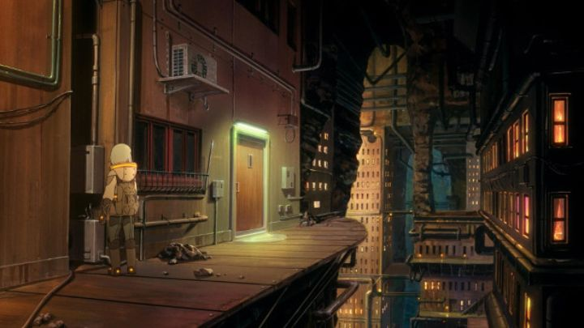

"Patema Inverted" is an original anime film. By a storied, original voice as its director. Yasuhiro Yoshiura already had a fanbase after his 2006 short film "Pale Cocoon," and again in his follow-up net-series-turned-film "Time of Eve." In the late 2000's, when "net-anime" became a little more commonplace for indie animators and experimental works, Yoshiura was arguably one of the biggest "small" names to watch for. It's natural that his first proper feature film, "Patema Inverted," would carry some expectations with it. In particular, Yoshiura seems to have a knack for original concepts in the sci-fi genre, and more importantly, has an understanding for how to portray it in an interesting way. In this case, the theme is "two worlds," each, bizarrely, with opposite senses of gravity. One set of people live below ground, not daring to go above. The lead character, Patema, is a head-strong teenager who dreams of exploring outside their underground town, and accidently falls off a ledge, down an infinite hole. To her surprise, she comes out the otherside, and realizes she's not falling, but floating... she's appeared outside, but gravity propells her up, not down. If not for a topsider named Eiji, she would have kept flying into the sky, but he grabs on to her just in time, both of them floating several meters in the air before coming back safely down. Awwww, those two will fall in love, won't they?As Eiji leaves Patema hidden in a shed to go to school, we get a sense of the world: the top world is clean and organized, highly controlled and monitored, with technology and automation. It's a big contrast to the world of scavengers below. But it's a wary contrast, and the top world feels unsafe somehow. What in history caused the rift, where half of the human population became inverted? Why is the top world so strict against daydreaming or looking up at the sky, and why would they have such prejudice against the existance of those from the bottom world, treating them as other than human? There seems to be a greater story afoot, led by the top world's leader, whom one would immediately recognize as the antagonist with his evil grin in the first shot. OK, the antagonist isn't well written (and is the source of some darker material that almost prevents the film from being appropriate for children), but the world building is impressive here, and you'll appreciate the surprise twist in the final act. But to help fill some time, we see the relationship between Patema and Eiji grow. Thanks to Patema's lovable and unabashed personality, we get some great humor in the first half of the movie, far more than I was expecting, which helped a lot during the slower moments. The two also have a similar history in their family, helping them bond more, a sweet young romance that becomes the catalyst to change the world, literally.  The production values of "Patema Inverted" are good, but not spectacular. Director Yoshiura has a preference to use first-person camera shots with motion-blur, and there's a little of that here, but not enough to take advantage of the original aesthetic. Otherwise, character designs are pleasant but flat, and animation is good but not in a way that stands out at all. The most impressive thing is the background art and design, be it in the underground world of rock and metal, or the above-ground world of modern cityscapes, clean and sterile. In a similar way, the music is rather good, but not memorable, and the English dub is the same way. Aside from the brief moments where the lead characters helplessly float in the sky, visuals aren't the reason to watch the movie: you're here for the setting and story. "Patema Inverted" is a unique anime film with romance, comedy, drama, tension and science fiction. In the sci-fi genre in particular, it's a breath of fresh air that virtually anyone could get into, with meaningful themes and lessons to teach us. Limited production values prevent it from changing the world, but the smart story might flip your world upside down.
- "Ani" More reviews can be found at : https://2danicritic.github.io/ Previous review: review_Parasite_Dolls Next review: review_Patlabor_2